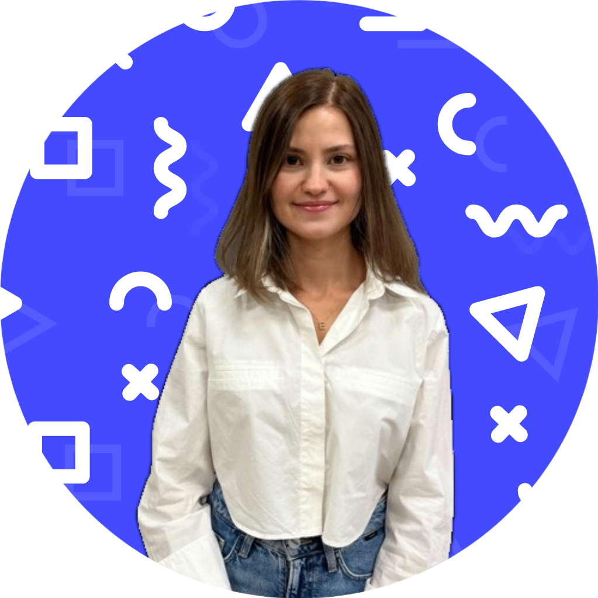

Elif Durukan

Kısaca:
Merhaba! Ben. 27 yaşındayım. Ankara'da yaşıyorum.
Eğitim:
Liseyi Yavuz Sultan Selim Anadolu Lisesi'nde okudum. Üniversiteye ise Selçuk Üniversite'sinde başlayıp Kırıkkale Üniversitesi'nde tamamladım. Elektrik Elektronik Mühendisliği mezunuyum.
İş Deneyimi:
2021 yılında ilk işim olan Pelsan Aydınlatma'da Satış Mühendisi olarak yer aldım. Aynı sene içerisinde GGTEK isimli firmaya Ar-Ge ve Üretim Mühendisi olarak geçiş yaptım.
Staj ve İş Deneyimlerim
- 2018 -Staj - SDT Uzay ve Savunma Teknolojileri, Ankara
- 2019 - Staj - Ekin Software Teknoloji, Ankara
- 05 -2021 - Pelsan Aydınlatma, Ankara
- 09 - 2021 - Halen - Gelişmiş Güvenlik Teknolojileri, Ankara
Becerilerim
- Python
- HTML
- CSS
- JavaScript
Hobilerim:
Genel olarak değişken bir kişiliğim olduğunu söyleyebilirim. Bazen dışarıda vakit geçirmekten çok zevk alırken bazen de evden hiç çıkmak istemem. Her iki durum için de zevk aldığım şeyleri paylaşmak isterim.
Leo isminde bir kedim var ve bazı saatler oyun oynama bayılır, ben de bu anları kaçırmak istemem.
Kitap okumayı çok severim. En sevdiğim yazarlara Ahmet Ümit ve Zülfü Livaneli'yi örnek verebilirim.
Ankara'da her ne kadar kısıtlı bir alan olsa da yeşillik alanda yürüyüş yapmak.
Bir oyun kafesine gidip Secret Hitler, Codenames gibi kağıt oyunları oynamak.
Yaşadığım yer böyle bir şeye benziyor: